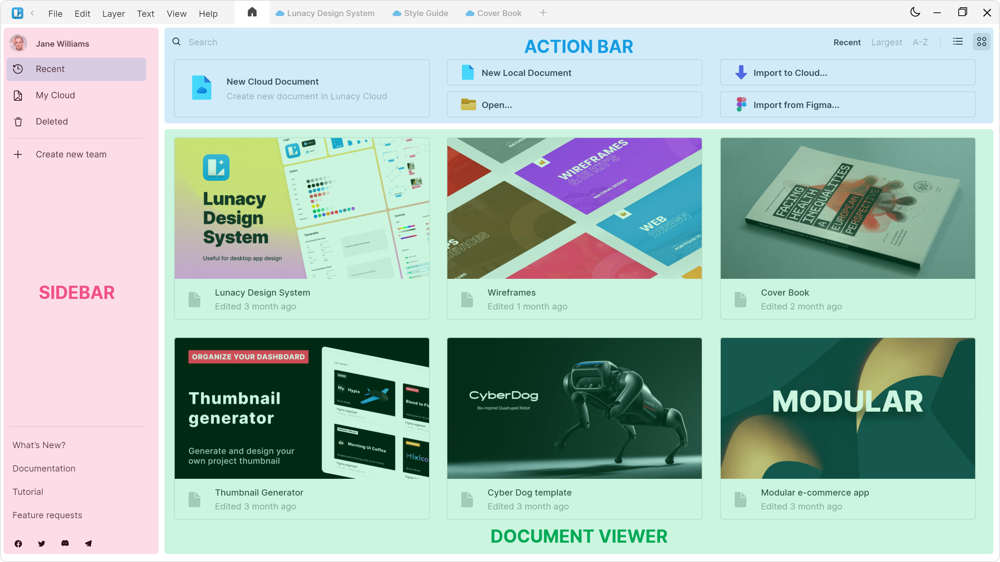

Lunacy's interface is intuitive and minimal. It won't take long for you to learn how to interact with it.
This section is a brief overview of the app's interface. Get acquainted with the basics so you can get started with your designs right away.
These are the main elements of the interface:

Use them to switch between:
Shrink the width of the Content tabs panel by dragging its border to the left:
Displays the contents of the selected tab. Toggle the display of the panel on
and off by pressing the shortcut corresponding to each of the 7
tabs: Alt + 1 / ⌥ + 1 … Alt + 7 / ⌥ + 7.
You can also use Shift + F1 or View → Left Panel in the menu bar.
Features all the primary design tools you'll need. Read more about each tool. If you need more space or prefer to use shortcuts, you can hide the toolbar by clicking (View → Toolbar) in the menu bar.
This is your working area. Read in detail about working with the canvas.
This panel lets you see and adjust the properties of the selected layer. The view of the right panel varies depends on the layer type.
Displays the options and commands related to files, layers, editing, etc. It also features the button, which opens up the Home tab.
The set of controls displayed on the context toolbar depends on the type of the currently selected layer. Hover the cursor over a tool icon to see a pop-up explaining what it does.
The tabs of currently open files are displayed on the right of the Home button.
Click on the tabs to switch between them or
press Ctrl + Tab / ⌘ + Tab and Ctrl + Shift + Tab / ⌘ + Shift + Tab.
Starts the prototype previewer. Read more about prototyping in Lunacy.
This button opens up a menu with these options:
| Button | Description | Windows and Linux Shortcut / Menu Option | MacOS Shortcut / Menu Option |
|---|---|---|---|
 |
The Show/Hide rulers button toggles rulers on and off. | Ctrl + R |
⌘ + R |
 |
The Show grid button enables the display of the square grid. | Ctrl + ' |
⌘ + ' |
 |
The Layout grid button controls the display of the layout grid and is available only when there is a frame on the canvas. | Ctrl + \ |
⌘ + \ |
 |
The Show prototyping button controls the display of hotspots and prototyping arrows. | View → Prototyping | |
| With the Slice tool, you can to select a specific area on your design and export it. | View → Slices | ||
 |
The Pixels on Zoom option shows pixels when the zoom value exceeds 100. | View → Pixels on Zoom | |
 |
Toggle the display of document comments in the right panel on and off. | - |
Use it to adjust the zoom value. Read in more detail about zooming options.
Use it to switch between the light and dark themes.
To adjust the scale of the interface, go to View → Interface scale, or use these shortcuts:
Ctrl + Shift + Alt + + / ⌥ + Shift + ⌘ + = — increase scaleCtrl + Shift + Alt + - / ⌥ + Shift + ⌘ + - — decrease scaleCtrl + Shift + Alt + 0 / ⌥ + Shift + ⌘ + 0 — reset scaleWhen you need to hide the interface partially or entirely:
Ctrl + . / ⌘ + ..
This activates Presentation mode, useful for showcasing your designs with no distractions from the interface.
The canvas is your working area. Add layers to it and place them wherever you want.
If you need to work within certain boundaries, add frames to the canvas. To position layers and frames more precisely, you can add rulers, guides, and grids.
Read in detail about working with the canvas in the Basics section.
Open the Layer list by clicking on the Layers content tab. It will display the layers on the current page:

Press
Lunacy automatically assigns names to new layers and layer groups. You can always rename them if you like.
If a layer name doesn't fit in the Layer list, you can change the width of the panel this way:
Using the Layer list, you can:
| Action | Description |
|---|---|
| Select layers |
To select a layer or layer group, click its name in the Layer list.
A selection frame will appear around the layer. To select multiple
items hold down the
Ctrl / ⌘ or Shift keys and click on the layers.
|
| Search for layers | To locate a layer, start typing its name in the search field above the Layer list. |
| Arrange layers | Change the order of the layers in the list by dragging them up or down. Organize layers as you see fit and position them in the order you want them to be stacked if they're overlapping on the canvas. |
| Hide layers |
To hide layers, layer groups, or individual items inside layer groups,
select a layer and click the eye icon next to its name. You can also
hide layers by using the Ctrl + H / ⌘ + H shortcut or
the corresponding option on the context menu.
|
| Lock layers |
Lock layers, grouped layers, or individual layers within a group to protect
them from accidental edits. To do this, select a layer in the Layer
list and click the lock icon, press Ctrl + L / ⌘ + L, or use the
corresponding option on the context menu. To select locked layers and
edit their properties in the right panel, right-click them on the
canvas or select them in the Layer list.
|
Other basic operations with layers are available on the context menu.
To collapse all layers in the Layer list, press Ctrl + ~ / ⌘ + ~.
To quickly move to a specific layer in large projects:
Ctrl + 2 / ⌘ + 2 or double-click the icon
in front of the layer name to use the zoom to selection feature.
Find out about more useful tips and tricks.
The right panel appears on the right of the Lunacy interface when you select a layer.
When you create a new document, the first thing you'll see on the right is a list of frame presets. Once you add a frame or layer, the right panel will open up and display its properties. If you deselect all frames and layers, you will see general workspace settings and options.
Read more about working with the right panel.
There can be any number of pages in a document.
You can keep all your work on a single page or split it between several pages. For instance, when designing a website, you can keep the desktop and mobile versions on separate pages.
Additionally, you can duplicate a page to save a version of your current design and experiment with the copy. It's completely up to you to decide which approach to choose.
Here's what the Page list looks like:
It shows up above the Layer list when the Layers content tab is selected.
Use the Page list to:
To add a new page to the document:
+ icon above the Layer list.Enter.To change the position of a page in the list, simply drag it to where you want it to be.
The rest of the actions are accessible through the context menu, which you can access by right-clicking a page name.

There is also a special type of page — the Components page. It stores the reusable components. you can create in your designs.
In the Home tab, you can manage your:
The Home tab opens up when you start Lunacy if you don't have any previously opened documents in the app. Otherwise, you'll see your most recently edited document on startup.
You can access the Home tab from within a document by clicking
These are the main sections of the Home tab:
The Home tab makes it easy to create, manage, and organize all of your personal and team docments.
To create a new document, use any of the following ways depending on the document type:
| Local | Cloud | |
|---|---|---|
| On the Home Tab, click | New Document | New Cloud Document |
| On the menu bar, select | File → New Document | File → New Cloud Document |
| Anywhere in Lunacy, press | Ctrl + N / ⌘ + N |
Ctrl + Shift + N/⌘ + Shift + N |
| At the top of the screen, click | +(on the right of the document tabs) |
To open a cloud document, click on its thumbnail on the Home tab.
As for other options, use any of these to open local documents:
Ctrl + O / ⌘ + O.
Supported formats include sketch, svg, png, jpg,
jpeg, bmp, webp, ico, and gif.
To open a cloud document shared with you:
Ctrl + V / ⌘ + V anywhere in the app.You can import:
.sketch documents to Lunacy Cloud.sketch documents (which you can then upload to Lunacy Cloud).sketch files to cloud.sketchCtrl + V / ⌘ + V anywhere in the Lunacy app to open it.To import private Figma files, you'll have to enter its link as well as a personal access token generated in Figma for third-party app integrations.
To generate a personal access token in Figma:
Enter.In the sidebar, your documents are divided into three categories:
In any of these sections, you can right-click on a document preview to open the context menu:
To search for documents by keyword, use the search field in the action bar:
Use the buttons on the right of the search bar to sort documents and switch views.
You can create teams for collaborating with others. Create projects inside teams and use them like folders to organize your documents.
Log in to your account to get full access to our graphics, create teams and projects to collaborate with other people, and share your portfolio online.
In the Home tab, click Log In at the top of the sidebar. Use your existing Icons8 account or via another service:

To create a new account, click Register.
Once you're logged in, you will see your profile page:
Use it to:
Edit your name, profile description, and profile picture.
Your profile information shows up here and is visible to people with access to your cloud documents, as well as the the members of your team.
Personal cloud documents show up on your profile page in the app with a Publish/Unpublish button. Click it to add or remove documents from your web profile, a public page where you can showcase your designs.
Use it as a portfolio of your works:
Icons8 graphics are free for personal and commercial use as long as you include an attribution link to us.
SVG files and high-resolution photos are unavailable on the free plan. To get these options and use our graphics without mandatory attribution, consider a paid graphics subscription.
You can also upgrade to a cloud or team plan for more freedom with cloud documents, team creation, and document management.
You can also access the list of our graphics subscriptions by Unlock All Assets on
your profile page, then See Pricing. To see all product and subscription options
available to you, as well as your Downloads (assets you've previously downloaded),
click
Exit your account by clicking the Log out button at the top right corner of the account page. To delete your account, open the context menu and click Delete account.